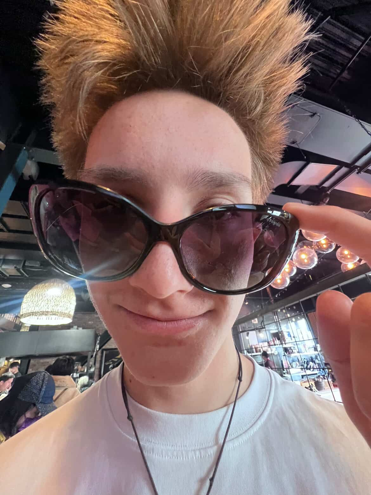
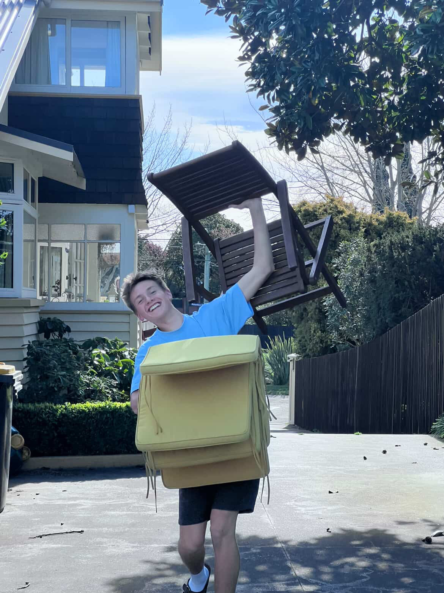

{kind=link}
 
Information:
Jesse is a well-composed and personable young individual with blonde hair and a calm, approachable demeanor. He interacts with others with ease, demonstrating kindness, attentiveness, and a genuine interest in those around him. His confidence is steady and understated, allowing him to make a positive impression without seeking attention. Jesse carries a naturally striking presence, with light blond hair that falls in an easy, effortless style and clear features that give him a quietly confident look. His appearance is matched by his impressive talent with a guitar; whether he’s playing a familiar tune or experimenting with his own melodies, he handles each chord with remarkable ease and focus. The smooth rhythm of his playing seems to draw people in, not just because of the sound itself, but because of the calm passion behind it. Jesse’s skill isn’t loud or boastful—it's the kind that makes listeners stop, pay attention, and appreciate the depth of his musical ability. Whether contributing to group activities or engaging in everyday conversation, Jesse brings a considerate and pleasant presence that is appreciated by peers and adults alike.
Jesse carries a naturally striking presence, with light blond hair that falls in an easy, effortless style and clear features that give him a quietly confident look. His appearance is matched by his impressive talent with a guitar; whether he’s playing a familiar tune or experimenting with his own melodies, he handles each chord with remarkable ease and focus. The smooth rhythm of his playing seems to draw people in, not just because of the sound itself, but because of the calm passion behind it. Jesse’s skill isn’t loud or boastful—it's the kind that makes listeners stop, pay attention, and appreciate the depth of his musical ability.
Fun Fact: Jesse is a member of the International Zoo Educators Association